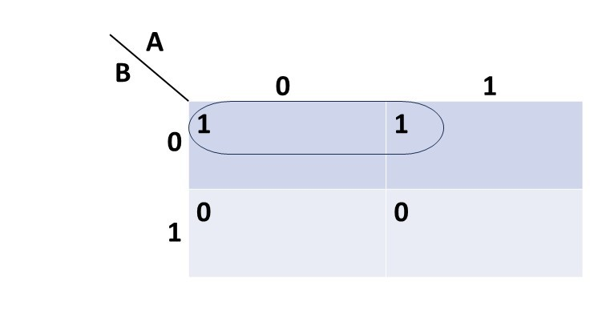
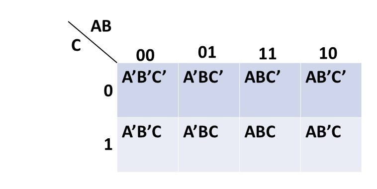
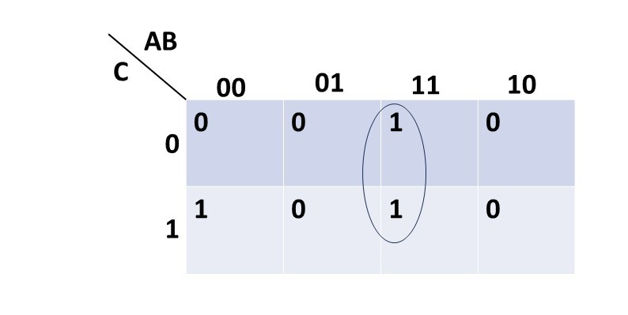
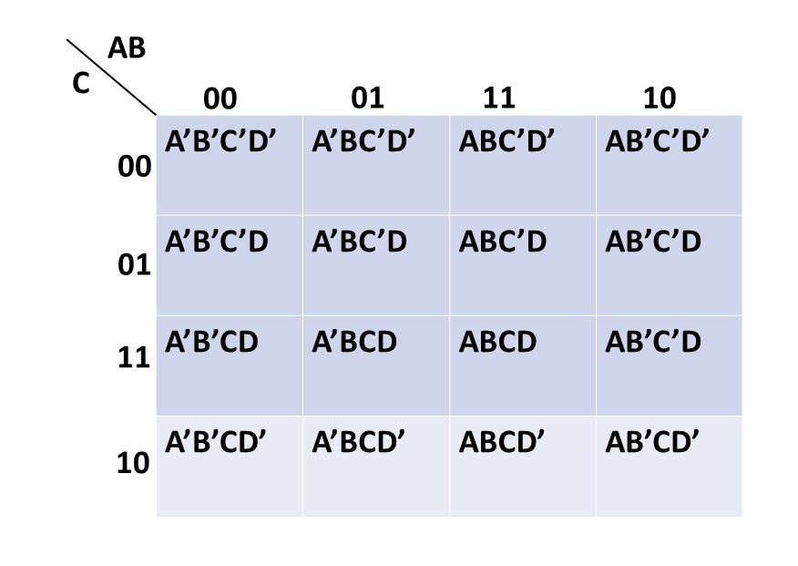
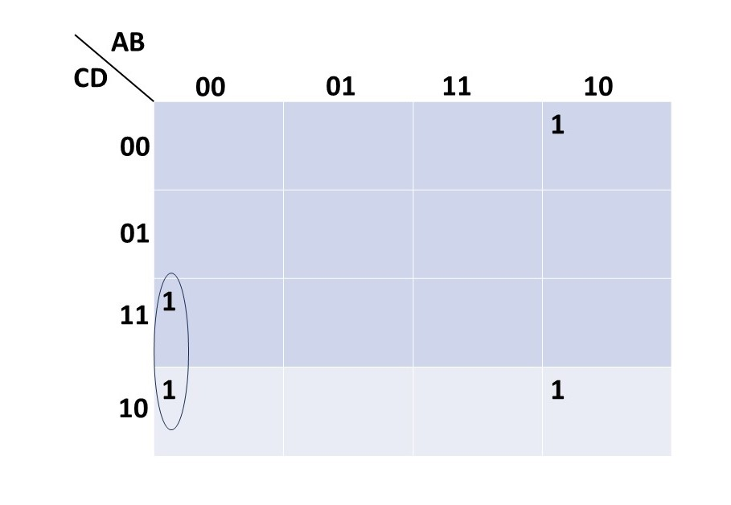

Boolean Algebra
| Table Of Content | |
|---|---|
Development of Boolean Algebra:
Boolean Algebra is an algebra of logic. One of the earliest investigators of symbolic logic was George Boole(1815-1864) who invented a systematic way of manipulating logic symbols which became known as Boolean Algebra. Till 1939, there was no practical application of Boolean algebra. In 1938 Shanon's work gave an Idea that Boolean Algebra could be applied to digital electronics. Indeed, it has become now an indispensable tool to computer scientists because of its direct applicability to switching theory and the logical design of digital coputers.
Although the symbol 0 and 1 used in this tutorial look like the binary numbers, they are not. They do not represent any numerical values. They only have logical significance.
Truth Functions:
A truth function is a function that accepts truth values as input and produce a unique truth value as output. In other words, The input and output of a truth function are all truth values. A truth function will always output exactly one truth value, and inputting the same truth values will always output the same truth value. For example, In propositional logic, wherein a compound statement is constructed using individual statements connected by logical connectives.
Classical propositional logic is a truth-functional logic, in that every statement has exactly one truth value which is either true or false, and every logical connectives is truth functional, thus every compound statement is a truth function. On the other side, modal logic is non-truth functional.
AND, OR, NOT Operators
The basic operations used in Boolean Algebra are logical addition, logical multiplication & logical complimentation(NOT). These basic operations are called logic operations.
AND Operator:
The logical multiplication can be defined as follows:
0.0 = 0
0.1 = 0
1.1 = 1
When logical multiplication is denoted by . or AND. If we write C = A.B,
we can determine C by listing all possible combination of A and B. The truth
table of logical multiplication of two variables is shown below:
| A | B | C = A.B |
|---|---|---|
| 0 | 0 | 0 |
| 1 | 0 | 0 |
| 0 | 1 | 0 |
| 1 | 1 | 1 |
OR Operator:
Each variable in Boolean Algebra has either two values:
true or false (1 and 0), The operation can be defined as follows-
0 + 0 = 0
0 + 1 = 1
1 + 0 = 1
1 + 1 = 1
When logical operation is denoted by + or by OR. If we write C = A + B,
one can determine C by listing all possible combinations for A and B in a
tabular form which is known as truth table of logical addition.
| A | B | C = A + B |
|---|---|---|
| 0 | 0 | 0 |
| 1 | 0 | 1 |
| 0 | 1 | 1 |
| 1 | 1 | 1 |
NOT Operator
In Boolean Algebra, an operation called complementation
is used for which symbol is -(bar over) or ' and this can be defined
as 0' = 1 and 1' = 0.
Here A' means the complement of A and read as NOT A. It is opposite
to the logic value of A. The truth table of NOT operation is given below.
| Input (A) | Output (B=A') |
|---|---|
| 0 | 1 |
| 1 | 0 |
Laws of Boolean Algebra:
The laws of Boolean Algebra expressions have been invented to help reduce the number of logic gates and perform a particular logic operation in a list of theorms, are called Laws of Boolean Algebra.
There are various laws in Boolean Algebra:
- Commutative Law:
a.) a + b = b + a
b.) a.b = b.a - Distributive Law:
a.) a + (b.c) = (a + b).(a + c)
b.) a.(b + c) = (a.b) + (a.c) - Identity Law:
a.) a + 0 = a
b.) a.1 = a - Complement Law:
a.) a + a' = 1
b.) a.a' = 0 - Idempotent Law:
a.) a + a = a
b.) a.a = a - Boundedness Law:
a.) a + 1 = 1
b.) a.0 = 0 - Absorption Law:
a.) a + (a.b) = a
b.) a.(a +b) = a - Associative Law:
a.) (a + b) + c = a + (b + c)
b.) (a.b).c = a.(b.c) - Uniqueness of compliment:
a + x = 1 and a.x = 0, then x = a' - Involution Law:
(a')' = a - Demorgan's Law:
a.) (a + b)' = a'.b'
b.) (a.b)' = a' + b'
D-Morgan's Theorem:
The complement of any Boolean expression can be found
by successively applying the theorem reffered to as De-Morgan's theorem.
The two theorems are:
(x + y)' = x'.y'
(x.y)' = x' + y'
The verification of the theorem using truth table is given below.
| x | y | x' | y' | x+y | (x+y)' | x'.y' | x.y | (x.y)' | x'+y' |
|---|---|---|---|---|---|---|---|---|---|
| 0 | 0 | 1 | 1 | 0 | 1 | 1 | 0 | 1 | 1 |
| 0 | 1 | 1 | 0 | 1 | 0 | 0 | 0 | 1 | 1 |
| 1 | 0 | 0 | 1 | 1 | 0 | 0 | 0 | 1 | 1 |
| 1 | 1 | 0 | 0 | 1 | 0 | 0 | 1 | 0 | 0 |
These theorems can be extended to more than one variable.
Logic Gates:
A logic gate is an electronic circuit that operates on one or more input signals to produce an output signal. Gates are digital circuits and often called logic circuits. Gates are represented by symbols, the lines entering the symbol from left are inputs, and the line on the right is the output. Placing a small circle on an input or output complements that signal on that line.
OR Gate:
The OR Gate is an electronic device which receives two or more inputs and produces an output equal to the OR sum of the inputs. An input signal applied to gate has only two stable states either 1(high) or 0(low) and output is 1(high) if at least one of the inputs is high. The output is 0 if all inputs are 0. The symbol and truth table of OR Gate is given below.
| A | B | F = A + B |
|---|---|---|
| 1 | 1 | 1 |
| 1 | 0 | 1 |
| 0 | 1 | 1 |
| 0 | 0 | 0 |
AND Gate:
AND Gate is an electronic device that accepts the values of two or more Boolean variables as input and produces their Boolean sum as input. The symbol and truth table of AND gate is given below.
| A | B | F = A.B |
|---|---|---|
| 1 | 1 | 1 |
| 1 | 0 | 0 |
| 0 | 1 | 0 |
| 0 | 0 | 0 |
NOR Gate:
This gate is logically equivalent to a NOT gate with an OR gate. The NOR function is the complement of OR function. It is represented by the symbol and truth table below.
| A | B | (A + B)' |
|---|---|---|
| 1 | 1 | 0 |
| 1 | 0 | 0 |
| 0 | 1 | 0 |
| 0 | 0 | 1 |
NAND Gate:
This gate is logically equivalent to a NOT gate in series with an AND gate. The symbol and truth table of NAND Gate is given below.
| A | B | F = (A.B)' |
|---|---|---|
| 1 | 1 | 0 |
| 1 | 0 | 1 |
| 0 | 1 | 1 |
| 0 | 0 | 1 |
Exclusive OR:
The full name of OR Gate is the inclusive OR gate. The exclusive OR gate is different. It given an output of 1 when either but not both inputs are 1. In Boolean Algebra, the sign ⊕ stands for XOR operation. The truth table for this gate and its symbol is given below.
| A | B | F = A'B + AB' |
|---|---|---|
| 0 | 0 | 0 |
| 0 | 1 | 1 |
| 1 | 0 | 1 |
| 1 | 1 | 0 |
Using truth table, the disjunctive normal form of the
gate is:
F = A.B' + A'.B = A ⊕ B
A logic circuit for XOR operation can be obtained by interconnecting
gates.
Exclusive-NOR(XNOR) Gate:
XNOR Gate is equivalent to an Exclusive OR gate followed by an inverter. The output is 1 only when both inputs are either 0 or 1. The truth table and symbol of XNOR Gate is given below:
| A | A | F = AB + A'B' |
|---|---|---|
| 0 | 0 | 1 |
| 0 | 1 | 0 |
| 1 | 0 | 0 |
| 1 | 1 | 1 |
XNOR operation can be written as follows:
F = AB + A'.B'
F = A XNOR B
F = (A ⊕ B)'
K-Maps
The karnaugh map method is a graphical technique which provides a simple straightforward procedure for simplification of Boolean expressions of two, three or four variables, It can also be extended to function of five, six or more variables. But as the number of variables increases, the excessive number of squares prevents a reasonable selection of adjacent squares and it is difficult to be sure that the best selection has been made.
A karnaugh map(K-map) is a diagram made up of a number of squares. If the expression contains n variables, the map will have 2n squares. Each square represents a minterm and 1s are written in the corresponding squares for the minterms present in the expression and 0s are written in those squares which correspond to the minterms not present in the expression.
2-Variable K-maps:
Since the number of variables are 2, the map will have 22= 4
squares. The value of one variable, say A, are listed above the top horizontal
line and the values of other variable, say B, are listed on the left side.
Four possible minterms with two variables A and B.
AB, AB', A'B, A'B'
are represented by four squares in the map as shown below.
Example: Find the karnaugh maps and simplify the expression.
a.) X = AB' + A'B'
Solution:
X = AB' + A'B' = (A + A')B'
X = 1.B'
X = B'

3-Variable K-maps:
A karnaugh map in three variable is a rectangle divided into eight squares. On of the ways that eight possible minterms are labled in squares is shown below. In addition to squares which are physically adjacent, leftmost and rightmost columns of K-map differ in only one variable. Thus A'B'C' and AB'C' are adjacent, and so are A'B'C and AB'C.
Example: Use karnaugh maps to simplify the following.
a.) X = ABC' + ABC
Solution:

The simplify form of X = ABC' + ABC is, X = AB
4-Variable K-maps:
A karnaugh map is four variables is a square divided into 16 (= 24) squares. The squares represented the 16 possible minterms in four variables. The definition of adjacent sqaures must be extended so that not only are leftmost and rightmost column adjacent as in the 3-variable map, but also the first and last rows are adjacent. The figure of karnaugh map of 4-varibles is shown below.
Example: Use karnaugh map to simplify the following expression.
a.) X = A'B'CD + A'B'CD' + AB'C'D' + AB'CD'

The simplified form of X = A'B'CD + A'B'CD' + AB'C'D' + AB'CD' is, X = A'B'C + AB'D'